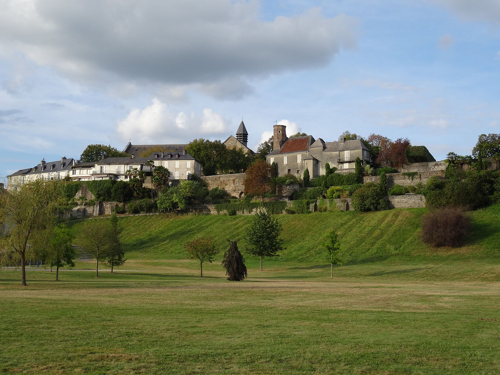

Article labellisé du jour
Lescar est une commune française située dans le département des Pyrénées-Atlantiques en région Nouvelle-Aquitaine. Elle s'étend sur les contreforts de la chaîne des Pyrénées, principalement au sein de la vallée du gave de Pau. La ville médiévale se développe sur un promontoire rocheux (Cité), surplombant le gave au sud, et se trouve délimitée par le ruisseau du Lescourre au nord puis par la plaine du Pont-Long. Lescar est l'héritière de la cité gallo-romaine de Beneharnum, première capitale du peuple des Venarni qui donne son nom à l'ancien État souverain du Béarn. Des traces de cette occupation antique sont retrouvées lors de fouilles menées, notamment dans le quartier du Bialé, mais aussi avec la découverte des restes de la villa Sent-Miquèu (Saint-Michel). La cité est en partie détruite durant le ixe siècle lors des raids vikings.
Ayant perdu son rôle de capitale béarnaise, au profit de Morlaàs, la cité se reconstruit à la fin du xe siècle sous l'impulsion du duc de Gascogne Guillaume Sanche. Il fait construire, en Haute-Ville, une chapelle dédiée à sainte Marie qui est consacrée cathédrale en 1062. Elle devient le siège des évêques de Lescar, faisant suite à la cathédrale primitive de Saint-Julien en Basse-Ville. Participant à la Reconquista au xiie siècle, l'évêque Guy de Lons remplace la chapelle-cathédrale par l'actuelle cathédrale Notre-Dame-de-l'Assomption de style roman. L'évêché structure la vie lescarienne jusqu'à la Révolution, avec la construction d'un palais épiscopal au xive siècle. Le Béarn devient un État protestant au xvie siècle sous la figure de Jeanne d'Albret. Symbole du pouvoir catholique, la cathédrale subit le saccage de l'armée de Montgommery en 1569 durant les guerres de Religion. Finalement, Lescar perd le siège de son diocèse en 1790 dans le cadre d'un regroupement avec Bayonne et Oloron. De cette période, Lescar garde plusieurs éléments patrimoniaux dont ses remparts, en partie antiques, avec la porte de l'Esquirette et certaines tours les constituant. En 1929, la crypte renfermant les dépouilles de neuf rois, reines, princes et princesses du royaume de Navarre est découverte dans la cathédrale.
Lescar devient un centre éducatif, tout d'abord avec l'installation de l'Académie protestante du Béarn en 1562, puis avec la décision d'Henri IV d'implanter un collège de Barnabites. Ce collège, construit au xviiie siècle, est l'ancêtre de l'actuel lycée Jacques-Monod. Après la Révolution, la commune perd de son influence et devient un satellite de Pau avec une importante activité agricole. La démographie lescarienne reste stable jusqu'aux années 1960, avant une période d'expansion sous l'effet de la périurbanisation. Aujourd'hui, Lescar est une commune d'environ 10 000 habitants située au cœur de l'aire urbaine de Pau. Outre sa fonction résidentielle, la commune a développé une forte activité commerciale autour de la zone commerciale Lescar Soleil. L'histoire agricole de la commune se poursuit toujours, avec la présence du siège social du groupe coopératif Euralis. Lescar est l'une des étapes de la via Tolosana du pèlerinage de Saint-Jacques-de-Compostelle.
Actualités
- 26 août : au Zimbabwe, le président sortant, Emmerson Mnangagwa (photo), est proclamé vainqueur de l'élection présidentielle tandis que l'opposition dénonce une fraude électorale.
- 26 août : au Gabon un couvre-feu est instauré et internet est coupé au motif des élections présidentielle et législatives. Un tentative de coup d’État à lieu le 30 août.
- 24 août : les BRICS (Brésil, Russie, Inde, Chine et Afrique du Sud) annoncent l'intégration de six nouveaux pays, prévue le 1er janvier 2024 : Argentine, Iran, Arabie saoudite, Émirats arabes unis, Égypte et Éthiopie.
- 23 août : un avion d'affaires appartenant à Evgueni Prigojine s'écrase en Russie ; son propriétaire et son bras droit Dmitri Outkine sont morts dans l'accident.
- 23 août : la sonde indienne Chandrayaan-3 se pose avec succès sur la Lune ; premier atterrissage réussi près du pôle Sud de la Lune.
Événement en cours
:
Feux de forêt à Hawaï
•
Crise au Niger
•
Feux de forêt en Grèce
•
Manifestations au Sénégal
•
Grève aux États-Unis
•
Conflit soudanais
•
Feux de forêt au Canada
•
Manifestations en Israël
•
Manifestations en Iran
•
Invasion de l'Ukraine par la Russie
Championnat d'Europe féminin de volley-ball
•
Coupe du monde masculine de basket-ball
•
US Open de tennis
•
Championnat d'Europe masculin de volley-ball
•
Tour d'Espagne
Nécrologie : 29 août : Guillermo Teillier • 28 août : Pat Corrales,Alan Haworth, Roger Van Hool • 27 août : Svetlana Adyrkhaïeva, Éléonore Faucher (photo), Maurice Fréchard, Anvar Ibragimov, Joe le plombier, Robert Pettinelli • 26 août : Geraldo Majella Agnelo, Bob Barker, Axel Bogousslavsky, Bertrand Marchand, Gleb Panfilov, Yvon Pedneault
Le saviez-vous ?
- Le tampon hygiénique de Donita Sparks (photo) est, relativement, beaucoup plus recherché que les vomissures d’Iggy Pop.
- Fidjien d’origine indienne, Amjad Ali a vécu deux coups d’État anti-indiens, l’un comme preneur d’otage, l’autre comme otage, avant de se retrouver dans le même parti que l’organisateur du premier.
- Brookesia nana a été décrite en 2021 comme la plus petite espèce connue de caméléons, avec une longueur totale de 21,6 mm pour le mâle holotype, soit 2 mm de moins que Brookesia micra qui détenait ce record depuis 2012.
- L’Ordre de la Perpétuelle Indulgence n’est pas reconnu par le Vatican.
- Le plus ancien texte religieux connu a été révisé par un correcteur qui a demandé 163 modifications.
- Le magazine Literary Review distingue chaque année les pires scènes de sexe dans la littérature.
Éphéméride du 30 août
- 1922 : la bataille de Dumlupınar met fin à la guerre d'indépendance turque.
- 1963 : le téléphone rouge est mis en place entre le Kremlin et la Maison-Blanche.
- 1991 : l'Azerbaïdjan proclame son indépendance.
- 1995 : le Kazakhstan adopte sa nouvelle constitution.
- 1999 : un référendum sur l'indépendance se tient au Timor oriental.
- 2013 : la découverte du Grand Canyon du Groenland est annoncée.